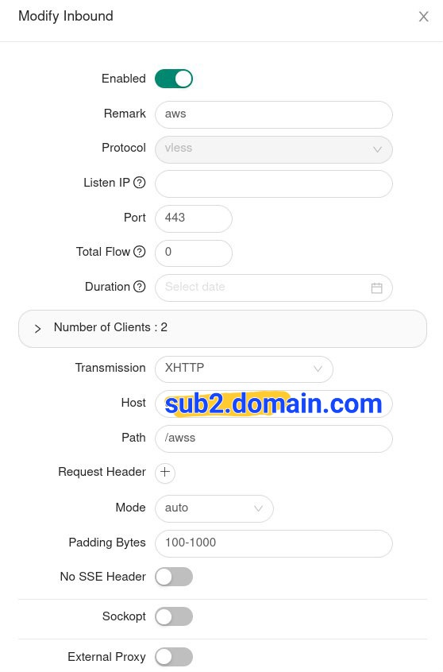
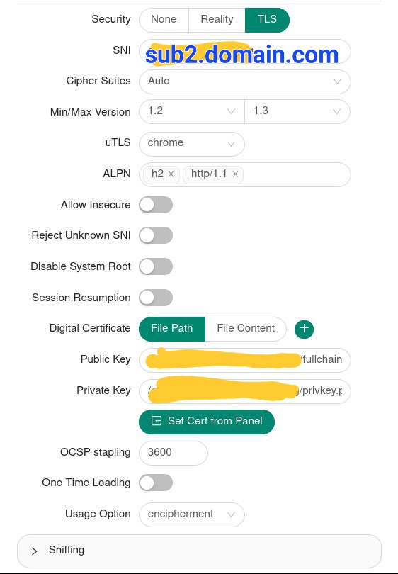

Setup Amazon Cloudfront as cdn domain for V2ray
How to setup an Amazon Cloudfront cdn for v2ray specifically in X-UI#
Requirements#
- Of course you need to have an amazon account setup and verified. It needs your credit card information to verify your account. However there will be no charges and the free tier is 1TB a month for CDN plus there are other free services you can use as well.
- You need a VPS running some form of X-UI. I’ll be using 3X-UI.
- A domain name that is not the country code of a sanctioned country like ru or ir.
- Basic knowledge of creating configurations with X-UI.
Getting started#
I’m using Cloudflare to manage my domains and records. I suggest you do the same but the instructions are similar no matter the route you choose to take.
Create an A record from your domain to your vps IP address. Let’s call it sub1.domain.com.
If you’re using Cloudflare the proxy checkmark should be off
AWS#
In aws search for cloudfront and create a distribution. You’ll see a screen with a lot of fields to enter information. Must of it is fine as is but we’ll get to what you need to change.
- For origin name enter the subdomain pointing to your vps aka
sub1.domain.com. - Protocol select match viewer so you can create both tls and non tls configurations for your v2ray.
- Compress objects automatically
no. - Tap on Cache Policy and choose
CachingDisabled. - Further down check
Do not enable security protections.
That’s the changes for this part. Tap on create distribution. If you get a message saying your account needs to be verified but your payment information is correct, search for ec2 in aws console and start a remote machine and play with it for a while. It should auto trigger the verification
You’ll see a page with a domain name inside it generally ending with cloudfront.net. It should be under Distribution Domain Name.
Copy it.
Back to Cloudflare#
In Cloudflare now we need to create another subdomain. Let’s call it sub2.domain.com.
Create a CNAME record pointing sub2.domain.com to the url you got that you copied in the previous step.
again make sure proxy is checked off
Get certificate from AWS#
Head back to your Cloudfront console. Under general tab there’s a section called Settings inside it tap on the edit button.
In the new section choose Alternate Domain Name (CNAME) - Optional. Click on add item and enter the second subdomain in this example sub2.domain.com.
Head over to Custom SSL Certificate - Optional and click request certificate.
In the new page under domain name enter sub2.domain.com and leave other values as is. And tap on request.
You’ll see under certificate section that certificate is pending validation.
Tap on ID and in the new page under Domains you’ll see some information including CNAME name and CNAME value. Keep this tab open.
Verifying your domain on Cloudflare#
Back in Cloudflare create another CNAME subdomain. For name enter CNAME name and for target enter CNAME value that you got from the previous step.
Now if you check your Cloudfront tab and refresh it. You’ll see it now says issued instead of pending.
Now back to the distribution settings from where you were getting your certificate. Under Custom SSL you can now choose the certificate that you just got for you domain. Choose it and don’t touch anything else. Tap Save Changes.
Now wait a bit until you the last modified section change from deploying to a date and time. It might take a couple of minutes so don’t worry and refresh the page once in a while.
After you see a date and time go to next section.
Getting a certificate for your domain on your VPS#
In your vps get a certificate for sub2.domain.com. There are many tools and tutorials for this so I won’t go through it but you should in the end get a public key and a private key file for your sub domain.
X-UI Settings#
Now you need to create a configuration in x-ui. We will be using TLS in this config so make sure port 443 is free on your VPS. If it’s not you can check what’s taking it with this command. netstat -tulpn | grep 443
Create a configuration like you see below. You can choose path name and name as you wish.
 
That’s it. Export your configuration. And import it in your client. Edit the config. You can see in the address bar right now your VPS IP address is chosen by default. You can change this IP address to any website or IP that is also on Cloudfront. You can also use the domain that cloudfront gave you in a previous step. Paste it in and save the configuration.